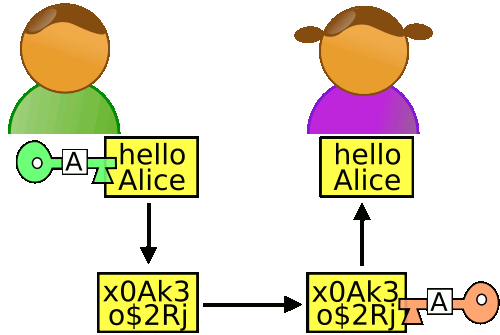

对称加密与非对称加密
使用相同的规则（秘钥）进行加密解密的算法成为“对称加密算法”，这种加密模式有一个最大弱点：甲方必须把加密规则告诉乙方，否则无法解密。保存和传递密钥，就成了最头疼的问题。
1976年，两位美国计算机学家Whitfield Diffie 和 Martin Hellman，提出了一种崭新构思，可以在不直接传递密钥的情况下，完成解密。这被称为“Diffie-Hellman密钥交换算法”。这个算法启发了其他科学家。人们认识到，加密和解密可以使用不同的规则，只要这两种规则之间存在某种对应关系即可，这样就避免了直接传递密钥。
这种新的加密模式被称为”非对称加密算法”。
（1）乙方生成两把密钥（公钥和私钥）。公钥是公开的，任何人都可以获得，私钥则是保密的。
（2）甲方获取乙方的公钥，然后用它对信息加密。
（3）乙方得到加密后的信息，用私钥解密。
如果公钥加密的信息只有私钥解得开，那么只要私钥不泄漏，通信就是安全的。
我的理解：RSA加密算法就是一种非对称加密算法。甲向乙发送消息，乙先生成私钥和公钥，乙把公钥给甲，甲用公钥将信息加密，将加密信息发给乙，乙拿私钥解密。
在介绍RSA算法之前需要先介绍一点数学知识。
RSA算法的数学基础
互质关系
如果两个正整数，除了1以外，没有其他公因子，我们就称这两个数是互质关系（coprime）。比如，15和32没有公因子，所以它们是互质关系。这说明，不是质数也可以构成互质关系。
关于互质关系，不难得到以下结论：
- 任意两个质数构成互质关系，比如13和61。☆
- 一个数是质数，另一个数只要不是前者的倍数，两者就构成互质关系，比如3和10。
- 如果两个数之中，较大的那个数是质数，则两者构成互质关系，比如97和57。
- 1和任意一个自然数是都是互质关系，比如1和99。
- p是大于1的整数，则p和p-1构成互质关系，比如57和56。
- p是大于1的奇数，则p和p-2构成互质关系，比如17和15。
欧拉函数
对于任意给定的正整数n，计算在小于等于n的正整数之中，有多少个与n构成互质关系的方法就叫做欧拉函数。以φ(n)表示。在1到8之中，与8形成互质关系的是1、3、5、7，所以 φ(n) = 4。
第一种情况
如果n=1，则 φ(1) = 1 。因为1与任何数（包括自身）都构成互质关系。
第二种情况
如果n是质数，则 φ(n)=n-1。因为质数与小于它的每一个数，都构成互质关系。比如5与1、2、3、4都构成互质关系。
第三种情况
如果n是质数的某一个次方，即$ n = p^k $ （p为质数，k为大于等于1的整数），则
比如 $φ(8) = φ(2^3) = 2^3 - 2^2 = 4$。
这是因为只有当一个数不包含质数p，才可能与n互质。而包含质数p的数一共有$p^{k-1}$个，即$1×p$、$2×p$、$3×p$、…、$p^{k-1}×p$，把它们去除，剩下的就是与n互质的数。
上面的式子还可以写成下面的形式：
可以看出，上面的第二种情况是 k=1 时的特例。
第四种情况
如果n可以分解成两个互质的整数之积，$n = p_1 p_2$，则$φ(n) = φ(p_1p_2) = φ(p_1) * φ(p_2)$
即积的欧拉函数等于欧拉函数的积。比如，$φ(56)=φ(8×7)=φ(8)×φ(7)=4×6=24$。
这一条的证明要用到“中国剩余定理”，这里就不展开了。
第五种情况
因为任意一个大于1的正整数，都可以写成一系列质数的积。
根据第4条的结论，得到
再根据第3条的结论，得到
也就等于
这就是欧拉函数的通用计算公式。比如，1323的欧拉函数，计算过程如下：
欧拉定理
欧拉函数的用处，在于欧拉定理)。”欧拉定理”指的是：
如果两个正整数a和n互质，则n的欧拉函数 φ(n) 可以让下面的等式成立：
也就是说，a的φ(n)次方被n除的余数为1。或者说，a的φ(n)次方减去1，可以被n整除。比如，3和7互质，而7的欧拉函数φ(7)等于6，所以3的6次方（729）减去1，可以被7整除（728/7=104）。
欧拉定理的证明比较复杂，这里就省略了。我们只要记住它的结论就行了。
欧拉定理可以大大简化某些运算。比如，7和10互质，根据欧拉定理，
已知 φ(10) 等于4，所以马上得到7的4倍数次方的个位数肯定是1。
因此，7的任意次方的个位数（例如7的222次方），心算就可以算出来。
欧拉定理有一个特殊情况。
假设正整数a与质数p互质，因为质数p的φ(p)等于p-1，则欧拉定理可以写成
这就是著名的费马小定理。它是欧拉定理的特例。
欧拉定理是RSA算法的核心。理解了这个定理，就可以理解RSA。
模反元素
还剩下最后一个概念：
如果两个正整数a和n互质，那么一定可以找到整数b，使得 ab-1 被n整除，或者说ab被n除的余数是1。
这时，b就叫做a的“模反元素”。
比如，3和11互质，那么3的模反元素就是4，因为 (3 × 4)-1 可以被11整除。显然，模反元素不止一个， 4加减11的整数倍都是3的模反元素 {…,-18,-7,4,15,26,…}，即如果b是a的模反元素，则 b+kn 都是a的模反元素。
欧拉定理可以用来证明模反元素必然存在。
可以看到，a的 φ(n)-1 次方，就是a的模反元素。
RSA算法
密钥生成的步骤
我们通过一个例子，来理解RSA算法。假设爱丽丝要与鲍勃进行加密通信，她该怎么生成公钥和私钥呢？

第一步，随机选择两个不相等的质数p和q。
爱丽丝选择了61和53。（实际应用中，这两个质数越大，就越难破解。）
第二步，计算p和q的乘积n。
爱丽丝就把61和53相乘。
n的二进制长度就是密钥长度。3233写成二进制是110010100001，一共有12位，所以这个密钥就是12位。
实际应用中，RSA密钥一般是1024位，重要场合则为2048位。
第三步，计算n的欧拉函数φ(n)。
根据公式：
$φ(3233)=φ(6153)=φ(61)φ（53）=60*52=3120$
第四步，随机选择一个整数e，条件是1< e < φ(n)，且e与φ(n) 互质。
爱丽丝就在1到3120之间，随机选择了17。（实际应用中，常常选择65537。）
第五步，计算e对于φ(n)的模反元素d。
所谓“模反元素”就是指有一个整数d，可以使得ed被φ(n)除的余数为1。
这个式子等价于
于是，找到模反元素d，实质上就是对下面这个二元一次方程求解。
已知 e=17, φ(n)=3120，
这个方程可以用“扩展欧几里得算法”求解，此处省略具体过程。总之，爱丽丝算出一组整数解为 (d, k)=(2753,-15)，即 d=2753。
至此所有计算完成。
第六步，将n和e封装成公钥，n和d封装成私钥。
在爱丽丝的例子中，n=3233，e=17，d=2753，所以公钥就是(n, e) = (3233,17)，私钥就是(n, d)=(3233, 2753)。
RSA算法的可靠性
回顾上面的密钥生成步骤，一共出现六个数字：
p
q
n
φ(n)
e
d
这六个数字之中，公钥用到了两个（n和e），其余四个数字都是不公开的。其中最关键的是d，因为n和d组成了私钥，一旦d泄漏，就等于私钥泄漏。
那么，有无可能在已知n和e的情况下，推导出d？
- ed≡1 (mod φ(n))。只有知道e和φ(n)，才能算出d。
- φ(n)=(p-1)(q-1)。只有知道p和q，才能算出φ(n)。
- n=pq。只有将n因数分解，才能算出p和q。
结论：如果n可以被因数分解，d就可以算出，也就意味着私钥被破解。
可是，大整数的因数分解，是一件非常困难的事情。目前，除了暴力破解，还没有发现别的有效方法。维基百科这样写道：
“对极大整数做因数分解的难度决定了RSA算法的可靠性。换言之，对一极大整数做因数分解愈困难，RSA算法愈可靠。
假如有人找到一种快速因数分解的算法，那么RSA的可靠性就会极度下降。但找到这样的算法的可能性是非常小的。今天只有短的RSA密钥才可能被暴力破解。到2008年为止，世界上还没有任何可靠的攻击RSA算法的方式。
只要密钥长度足够长，用RSA加密的信息实际上是不能被解破的。”
举例来说，你可以对3233进行因数分解（61×53），但是你没法对下面这个整数进行因数分解。
12301866845301177551304949
58384962720772853569595334
79219732245215172640050726
36575187452021997864693899
56474942774063845925192557
32630345373154826850791702
61221429134616704292143116
02221240479274737794080665
351419597459856902143413
它等于这样两个质数的乘积：
33478071698956898786044169
84821269081770479498371376
85689124313889828837938780
02287614711652531743087737
814467999489
×
36746043666799590428244633
79962795263227915816434308
76426760322838157396665112
79233373417143396810270092
798736308917
事实上，这大概是人类已经分解的最大整数（232个十进制位，768个二进制位）。比它更大的因数分解，还没有被报道过，因此目前被破解的最长RSA密钥就是768位。
加密和解密
有了公钥和密钥，就能进行加密和解密了。
加密要用公钥 (n,e)
假设鲍勃要向爱丽丝发送加密信息m，他就要用爱丽丝的公钥 (n,e) 对m进行加密。这里需要注意，m必须是整数（字符串可以取ascii值或unicode值），且m必须小于n。
所谓”加密”，就是算出下式的c：
爱丽丝的公钥是 (3233, 17)，鲍勃的m假设是65，那么可以算出下面的等式：
于是，c等于2790，鲍勃就把2790发给了爱丽丝。
解密要用私钥(n,d)
爱丽丝拿到鲍勃发来的2790以后，就用自己的私钥(3233, 2753) 进行解密。可以证明，下面的等式一定成立：
也就是说，c的d次方除以n的余数为m。现在，c等于2790，私钥是(3233, 2753)，那么，爱丽丝算出
因此，爱丽丝知道了鲍勃加密前的原文就是65。
至此，”加密—解密”的整个过程全部完成。
我们可以看到，如果不知道d，就没有办法从c求出m。而前面已经说过，要知道d就必须分解n，这是极难做到的，所以RSA算法保证了通信安全。
你可能会问，公钥(n,e) 只能加密小于n的整数m，那么如果要加密大于n的整数，该怎么办？有两种解决方法：一种是把长信息分割成若干段短消息，每段分别加密；另一种是先选择一种”对称性加密算法”（比如DES），用这种算法的密钥加密信息，再用RSA公钥加密DES密钥。
私钥解密的证明
最后，我们来证明，为什么用私钥解密，一定可以正确地得到m。也就是证明下面这个式子：
因为，根据加密规则
于是，c可以写成下面的形式：
将c代入要我们要证明的那个解密规则：
左边二项式拆出来，除了第一项$m^e$，其他项都是n的倍数，所以它等同于求证
由于
所以
将ed代入：
接下来，分成两种情况证明上面这个式子。
（1）m与n互质。
根据欧拉定理，此时
得到
原式得到证明。
（2）m与n不是互质关系。
此时，由于n等于质数p和q的乘积，所以m必然等于kp或kq。
以 m = kp为例，考虑到这时k与q必然互质，则根据欧拉定理，下面的式子成立：
进一步得到
即
将它改写成下面的等式
这时t必然能被p整除，即 t=t’p
因为 m=kp，n=pq，所以
原式得到证明。